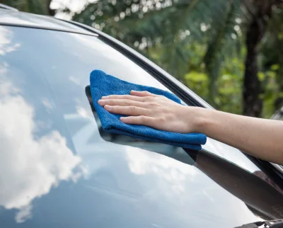
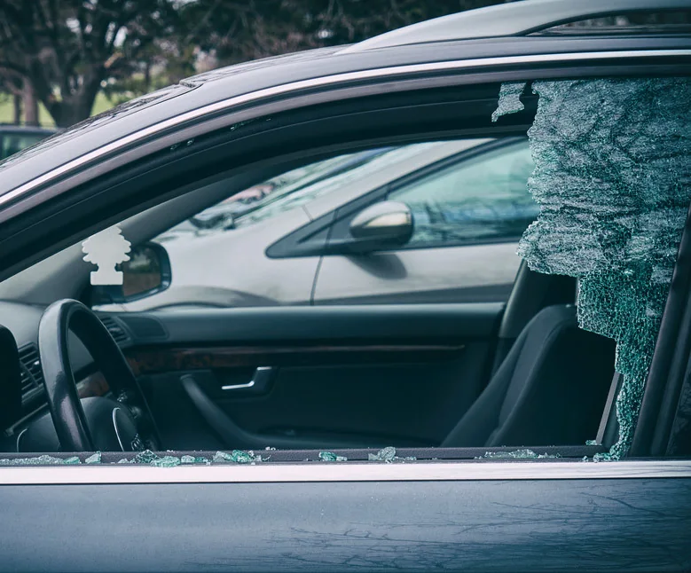
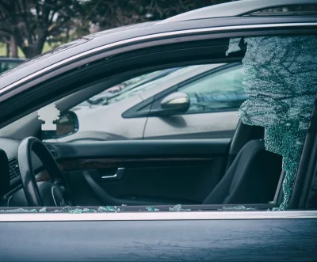
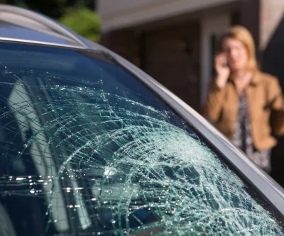
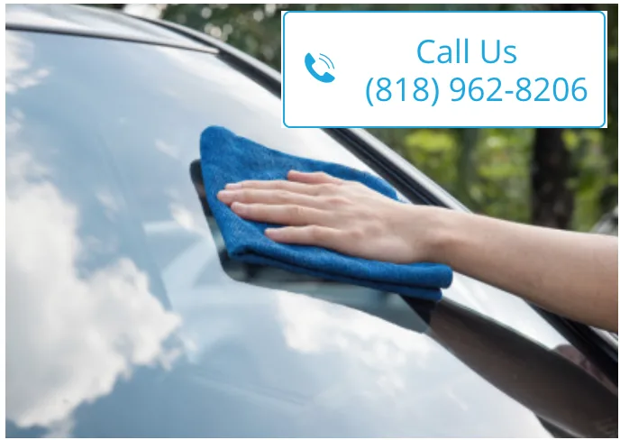
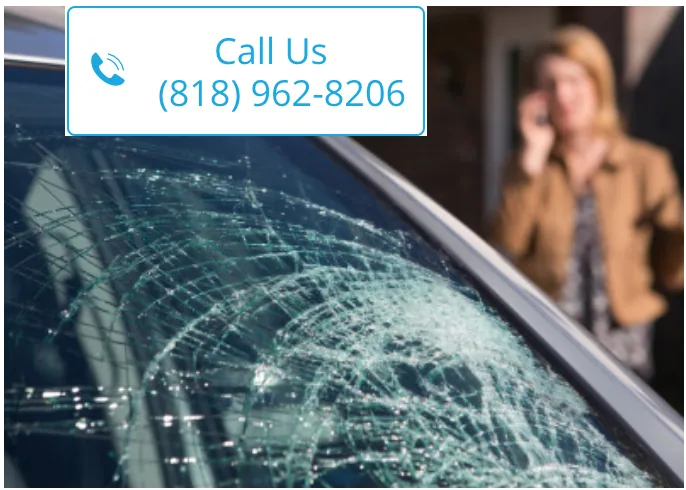

AUTO GLASS
WINDSHIELD REPAIR
Do you need to have your windhield replaced? We can help you with windshield replacement in Sherman Oaks.
Call for a quote
Reliable mobile auto glass and windshield replacement service brought to your home, office, or another convenient location.
We take care of mobile auto glass replacement in Sherman Oaks, CA, with convenient service for the glass needs described on the original website.

Do you need to have your windhield replaced? We can help you with windshield replacement in Sherman Oaks.
Call for a quote
We can replace all quarter panel windows on any car. call for a quote today.
Call for a quote
Whether you need the driver side or the passenger side window replaced, we can do it.
Call for a quote
Vent glass is the little triangle shaped window. We carry all of them.
Call for a quoteWe do mobile back glass repair for most cars. We take care of mobile auto glass replacement in Sherman Oaks, CA.
Call for a quoteOur commitment is to provide our customers the best possible customer experience. We value our customers and we accpet all feedback and recommendations from all our customer to improve our services. If you have any recommendation that you would like to share with us please let us know it and we will cosider it.
Sherman Oaks auto glass repair provides mobile windshield repair service and auto glass replacement all San Fernando Valley and sourrouding cities in the area. We have been providing our mobile windshield replacement in Sherman Oaks service for more than a decade. We offer same day mobile service. Our techinician can come to your place it at your house or work. Call us today and get your estimate over the phone. We will require the vehicle's information and also if it has any attachments such as rair sensor, antenna, heads up display and lane departure warning system etc. We can do windshield replacement, driver side window repair and passenger side window replacement and mobile auto glass replacement in Sherman Oaks, CA . Our technicians are capable to do any auto glass service on any car. Talk to one of our agents and he will assit you with the replacement process. Let us take care of your auto glass needs. We can get you back on the road the same day. Don't put your safety and the safety of thers at risk, driving with a cracked windshield. Most windshield replacement take about an hour and some take a little bit longer. For your convenice we cover the following cities: Sherman Oaks, Car Glass Lake View Terrace, Windshield replacement in Van Nuys, mobile auto glass in Valley Glen, mobile car glass in Valley Village and car window repair in Lake Balboa and more. To find out if we cover your city you can call us at (818) 962-8206.
READ MORE
Mobile Auto Glass Replacement and Windshield Replacement in Sherman Oaks, California Are you in need of reliable and professional auto glass replacement services in Sherman Oaks, California? Look no further! With over 10 years of experience, our team at Sherman Oaks Auto Glass Repair is here to provide you with top-notch services that will exceed your expectations. We specialize in mobile auto glass and windshield replacement, offering convenient solutions tailored to your needs. At Sherman Oaks Auto Glass Repair, we understand the hassle and inconvenience of dealing with a cracked or shattered windshield. That's why we offer free mobile service in the Sherman Oaks area, bringing our fully equipped mobile units directly to your location. Say goodbye to the days of having to take time off work or disrupt your busy schedule to visit a repair shop. We come to you, saving you time and effort. Our expert technicians are highly trained and equipped with the latest tools and equipment to handle any auto glass replacement job. Whether it's a minor chip or a complete windshield replacement, we've got you covered. Our team is dedicated to providing you with the highest level of service and ensuring your safety on the road. When it comes to the glass we use for replacements, we only offer the best. We provide safety laminated windshields and windows that meet all industry standards. These laminated windshields are designed to withstand impacts and provide enhanced protection in the event of an accident. Additionally, we offer tempered glass windows and windshields, known for their durability and resistance to shattering. Quality is our priority, which is why we use premium glass and windows for all our replacements. We understand that your vehicle is a significant investment, and you deserve nothing but the best. That's why we offer OEM equivalents, ensuring that the replacement glass matches the original specifications of your vehicle. With our services, you can have peace of mind knowing that your car's integrity and value are preserved. Your safety is our utmost concern, which is why we strictly adhere to all safety standards and regulations. Our technicians undergo regular training to stay updated with the latest advancements in auto glass replacement techniques. We take every precaution necessary to ensure that the replacement process is performed accurately and securely, providing you with a reliable and long-lasting solution. In addition to our exceptional services, we also offer advanced features to enhance your driving experience. If your vehicle is equipped with rain-sensing wipers, we can install rain-sensing windshields that automatically adjust the wiper speed based on the intensity of the rain. This feature improves visibility and makes driving in wet conditions safer and more convenient. For vehicles equipped with lane departure warning systems or collision alert systems, we provide specialized windshields that are compatible with these technologies. These windshields are designed to ensure the optimal functioning of these safety systems, providing you with an added layer of protection on the road. When you choose Sherman Oaks Auto Glass Repair for your auto glass replacement needs in Sherman Oaks, California, you can expect exceptional service, top-quality products, and a hassle-free experience. Our goal is to exceed your expectations and ensure your complete satisfaction. Don't let a cracked or damaged windshield compromise your safety and driving experience. Contact Sherman Oaks Auto Glass Repair today for reliable and convenient mobile auto glass and windshield replacement services in Sherman Oaks, California. Trust us to restore your vehicle to its original condition, providing you with clear visibility and peace of mind on the road.
Sherman Oaks auto glass repair provides mobile windshield repair service and auto glass replacement all San Fernando Valley and sourrouding cities in the area. We have been providing our mobile windshield replacement in Sherman Oaks service for more than a decade. We offer same day mobile service. Our techinician can come to your place it at your house or work. Call us today and get your estimate over the phone. We will require the vehicle's information and also if it has any attachments such as rair sensor, antenna, heads up display and lane departure warning system etc. We can do windshield replacement, driver side window repair and passenger side window replacement and mobile auto glass replacement in Sherman Oaks, CA . Our technicians are capable to do any auto glass service on any car. Talk to one of our agents and he will assit you with the replacement process. Let us take care of your auto glass needs. We can get you back on the road the same day. Don't put your safety and the safety of thers at risk, driving with a cracked windshield. Most windshield replacement take about an hour and some take a little bit longer. For your convenice we cover the following cities: Sherman Oaks, Car Glass Lake View Terrace, Windshield replacement in Van Nuys, mobile auto glass in Valley Glen, mobile car glass in Valley Village and car window repair in Lake Balboa and more. To find out if we cover your city you can call us at (818) 962-8206.
CONTACT US TODAY or CALL NOW (818) 962-8206